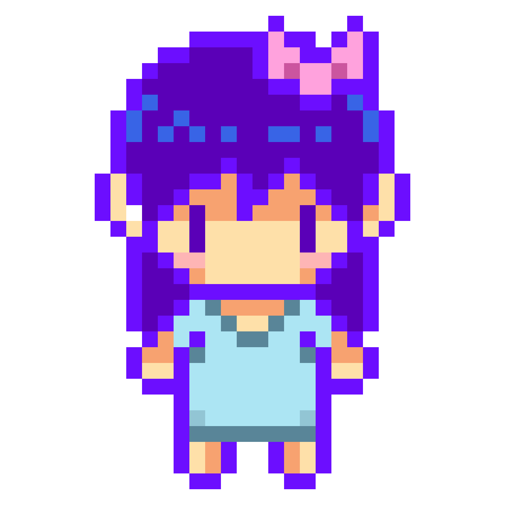
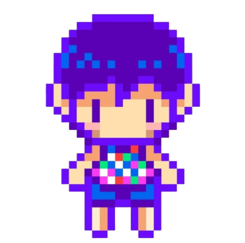
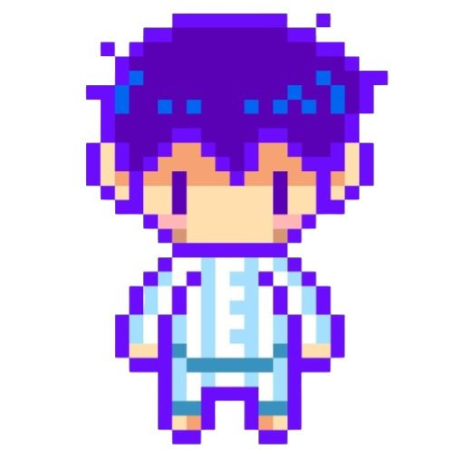

OMORI
OMORI é o protagonista titular em OMORI. OMORI pode ser controlado pelo jogador durante a noite, onde o ESPACO BRANCO e as áreas do HEADSPACE podem ser explorados. Quando OMORI está na liderança, ele pode derrubar obstáculos com sua faca.
saiba mais.
AUBREY
AUBREY é um dos três principais protagonistas secundarios de OMORI que se juntam ao partido de OMORI. Nas seções FARAWAY TOWN do jogo. Quando marcado como líder, AUBREY pode quebrar obstáculos com um taco.
saiba mais. KEL
KEL é um dos três principais protagonistas secundarios que se juntam ao grupo de OMORI. Quando marcado como líder, KEL pode lançar vários projéteis de bolas de certas plataformas para atingir objetos que de outra forma seriam inacessíveis ao grupo.
saiba mais. HERO
HERO é um dos três principais protagonistas secundarios de OMORI que se juntam ao grupo de OMORI. Quando marcado como líder, o HERO pode usar seu charme para convencer outros a ajudar o grupo.
saiba mais. 